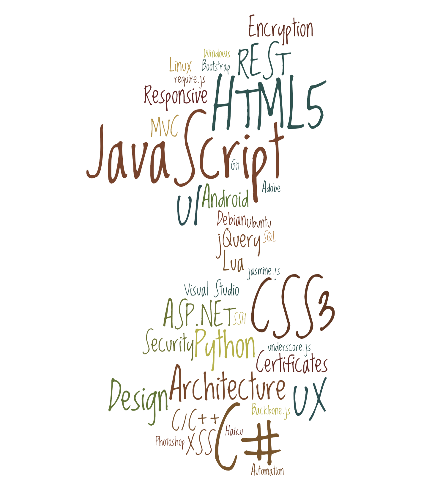

DEFAULT
COMPLETE
_ __ _ _____ ______
| | / / | | / ___| | ___ \
| |/ / ___ __| | _ _ \ `--. | |_/ / _ __ ___ __ __ _ __
| \ / _ \ / _` || | | | `--. \ | __ \| '__| / _ \ \ \ /\ / /| '_ \
| |\ \| (_) || (_| || |_| | /\__/ / _ | |_/ | | | (_) | \ V V / | | | |
|_| \__\\___/ \__,_| \__, | \____/ (_) |_____/|_| \___/ \_/\_/ |_| |_|
———————————————————————————————————————— __/ |——————————————————————————————————————————————————————————————————
/___/ thewizard@wasatchwizard.com
————————————————————————————————————————————————————————————————————————————————————————————————————————————————
————=== Technologies ===————
— General —— — Operating Systems ——
• I excel at making difficult to understand tasks • Windows (since Windows 3.1) · DOS (since 1988)
easy to accomplish. • Debian · Ubuntu · Linux (since 1998)
• I am thorough and avoid quick-fixes where ever • Haiku (hobbyist)
possible seeking rather to find and fix the root • Android · Windows CE / Mobile / Phone
cause of the problem.
— Server Platforms ——
— JavaScript (since 1997) —— • IIS · ASP.NET · Apache · PHP
• Hand-coding • VMware · VirtualBox · QEMU
• jQuery · jQuery UI / Mobile · Underscore
• Sencha Ext JS (5+ years) · Sencha Touch — Databases ——
• Backbone.js · Angular.js (some) • SQL · SQL Server · MySQL · Oracle · SQLite
— HTML (since 1995) —— — Misc. Technologies ——
• HTML5 · Bootstrap (Bootstrap.js) • Visual Studio · Sublime Text · Vim
• Sublime Text +Plugins · Vim · Eclipse
— CSS (since 1999) —— • Git · TFS · Subversion · Mercurial/hg · CVS
• CSS3 · SASS-SCSS · LESS • MSBuild · WIX
• Batch · PowerShell · Scripting & Automation
— C# (since 2001) —— • Paint.NET · Photoshop (Creative Suite)
• ASP.NET WebForms & MVC • C/C++ (since 1989) · Go · Lua
• WinForms · Console
• WCF · Web Services · MEF — Old stuff ——
• Visual Basic 1 > 6 · Classic ASP
— Python (since 2008) —— • Flash · ActionScript · Silverlight
• I teach a middle-school class on Friday mornings, • Java · JSP · BlackBerry · J2ME
using http://inventwithpython.com. • InstallShield · NANT · Perl
————=== Education ===————
Thomas Downey High School (1.5 yrs.) » Graduated at 15 years old
Modesto Junior College (2.5 yrs.) » Electronics · Robotics · C · C++
University of Phoenix (1 yr.) » Business Management
BrainBench.com » C# · ASP.NET · HTML · CSS · Older: VB6 · SQL Server · Windows Server
————=== Work History ===————
— ConsultNet (jul 2013–current) ——
• HTML5 · CSS3 · LESS & SASS · Bootstrap • AngularJS
• C# · ASP.NET WebForms, MVC & WebAPI • SQL Server · Oracle
• JavaScript · jQuery · JSON • SCRUM · Agile
• Responsive design websites • Git · GitHub · Subversion
— Venafi (5 years/jul 2008-jul 2013) ——
• HTML5 · CSS3 (LESS) · Bootstrap • MS UnitTests · NUnit · Watin (some Selenium)
• JavaScript · jQuery · Backbone.js · JSON • Android · Java · REST SDK · WCF · MEF
• C# ASP.NET · ASP.NET MVC · WCF · REST · JSON • Subversion > Git · SCRUM
• XSS · CSRF Prevention & Training • SCRUM-ish Agile
» "Kody was able to take an old, non user friendly console and architect a faster, cleaner design that actually
made sense to the users." – Venafi employee
» "As a product owner, I consistently went to Kody for basic functionality and walked away with highly usable,
enterprise-class UI. Kody always went the extra mile to deliver more than what was asked for." –Venafi employee
— Essential C# ——
• Edited several chapters, reviewed many more.
• Edited all source code from the book: https://github.com/IntelliTect/EssentialCSharp
» "Your contributions are huge...."
"Fantastic job with chapters 18, 19, and 0. Those were some valuable catches you made."
"You are finding stuff that has been missed through multiple editions before." — Mark Michaelis, Author
— Open Source Contributor ——
• Numerous open source contributions and projects: https://github.com/kodybrown
— OneGreatFamily.com (2 years/jul 2006-jul 2008) ——
• Web Architect and team lead for Genealogy website • C# ASP.NET · ASP.NET AJAX · Oracle · MySQL
• HTML · CSS · JavaScript (including mobile devices) • C# & C++ backend, data, and transport layers
• Facebook apps using FBML & FBJS · iGoogle widgets • SCRUM · Team Foundation Server (TFS)
"We were sorry you left. We had to hire three web guys to replace you and they still can't keep up!"
— from an employee of OneGreatFamily.com 2 years later.
— Patent #8,275,895 ——
• "Systems and methods for establishing a trusted dynamic host configuration protocol connection"
— LANDesk Software, Inc. (3.5 years/mar 2003-jul 2006) ——
• HTML · CSS · JavaScript • CVS > Subversion · Agile · Oracle · SQL Server
• Classic ASP > C# ASP.NET WebForms, AJAX • C++
• C# WinForms management console & framework • InstallShield · NANT · XML · XSLT · Batch · Perl
• Message-based SDK: C# · MSMQ · XML · SOAP · WinForm · Console
• LANDesk Handheld Manager (Client & Server):
C++ · MFC · Pocket PC · WinCE · Windows Mobile (over 1 million installs) · BlackBerry · Java · J2ME
• Flash: real-time charts · reporting · sliders & list controls using ActionScript.
• LDMS Client features: auto update, silent installation, task scheduler, and more..
"That [MBSDK] service is solid! We never have to touch it! It just works!" — employee of LANDesk 5 years later.
— Consultant (10+ years mixed throughout) ——
• Numerous websites for my own customers, friends, etc. • Business management apps: Windows & Responsive Web
• JavaScript · HTML5 · CSS3 · PHP · C# · ASP.NET • MySQL · SQL Server · IIS · Apache · etc.
• WordPress · Blogger · BlogEngine.NET · Joomla · Drupal • Custom-written email/marketing campaign manager.
• MySQL · SQL Server · IIS · Apache · etc.
— Knightsbridge, Inc. (1.5 years/aug 2001-mar 2003) ——
• Visual Basic 6 · Classic ASP > C# ASP.NET · XML & XSLT • Customer follow-up & service call center software
• SQL Server DBA · unique replication-performance setup • Online polls & questionnaires
"I didn't think these reports were possible! Each one saves our customers a couple days during their
[certification process]!" — Kathy Cameron, owner of Knightsbridge, Inc.
— SunGard Expert Solutions (1.5 years/feb 2000-aug 2001) ——
• Java · Swing · JSP · Servlets (some ASP) • HTML · CSS · JavaScript · Source Safe · XP-Agile
• Online & desktop financial calculators • Web charting without JavaScript
"These pages look stunning!" — Employee of New York Life, UI team, a customer of SunGard.
— Computer Consultants Corp. (3 months/2001/Contractor) ——
• Online banking website (used by 700+ credit unions) • HTML · JavaScript · CSS · Classic ASP
• Themed style sheets for easily integrating with existing credit union websites.
— Feature Films for Families (1 year/mar 1999-feb 2000) ——
• HTML · JavaScript · Classic ASP · Java Swing · Oracle · Waterfall
• Intranet-based Call Center Software · Web-based Online Store
— Paymentech, Inc. (1 year/feb 1998-mar 1999) ——
• Visual Basic 5 & 6 · ASP · Visual Source Safe · Agile • Oracle · SQL Server · Crystal Reports
• World's first online credit card banking portal
— Bricksoft Computers (Owner, 3 years/sep 1995-aug 1998) ——
• Customized computer hardware & software solutions • Office 95 solutions (Access & Word integration)
• Web design and site creation in HTML.
References are available upon request.